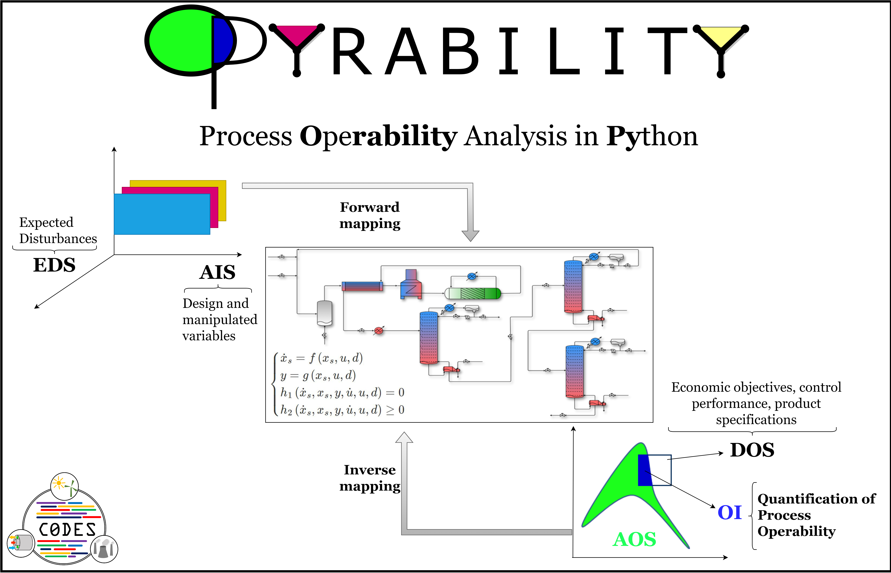

Opyrability Documentation  #
#


Opyrability - A Python-based package for process operability analysis - is an open-source project for advanced process operability analyses. The opyrability codebase includes the main operability algorithms, supplementary analysis and visualization methods to allow for the assessment of simultaneous design and control objectives early in the conceptual phase.

opyrability is developed by the Control, Optimization and Design for Energy and Sustainability (CODES) Group at West Virginia University under the supervision of Dr. Fernando V. Lima.
Check out the table of contents below to understand the basics of process operability and find examples on how to use the package!
Citing us#
This initiative has the objective of supporting process systems applications and promoting the dissemination, discussion and improvement of operability approaches and algorithms. Information about the developed approaches can be found at reference [1]. Please cite this reference if you use opyrability for your own research.
@article{Alves2024,
doi = {10.21105/joss.05966},
url = {https://doi.org/10.21105/joss.05966},
year = {2024},
publisher = {The Open Journal},
volume = {9},
number = {94},
pages = {5966},
author = {Victor Alves and San Dinh and John R. Kitchin and Vitor Gazzaneo and Juan C. Carrasco and Fernando V. Lima},
title = {Opyrability: A Python package for process operability analysis}, journal = {Journal of Open Source Software}
}